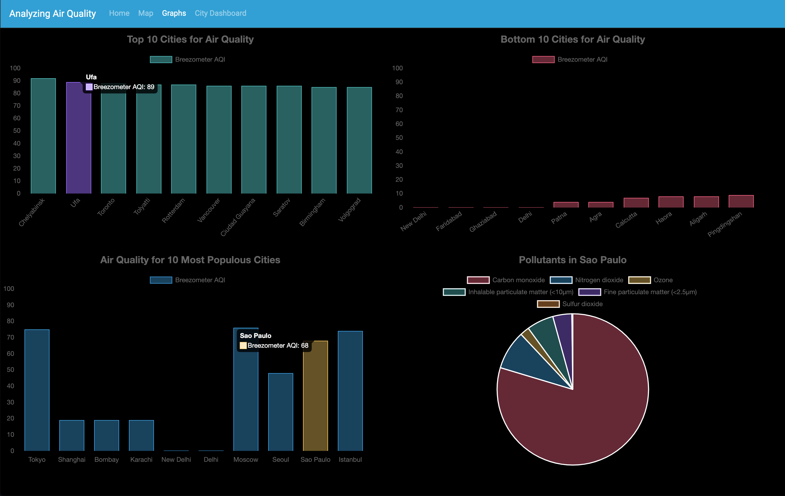
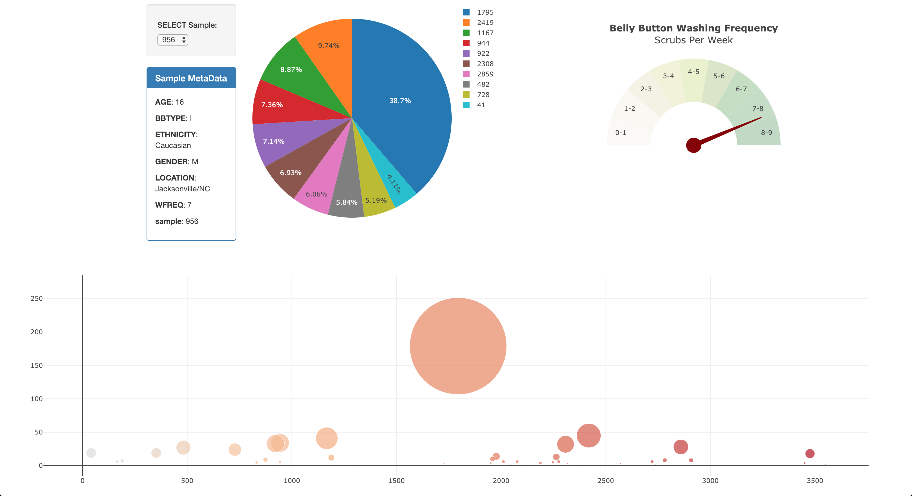
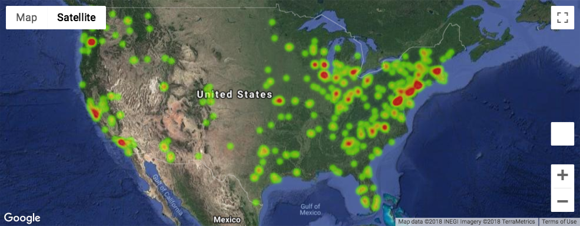
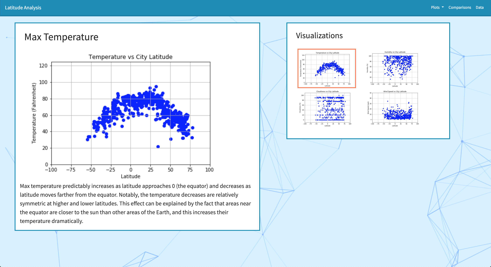

Projects
Air Quality Dashboard
In the wake of the Camp Fire earlier this year, some classmates and I created a dashboard that gathers and displays data about air quality and pollutants for cities around the world. The dashboard uses HTML/CSS, d3.js, Leaflet.js, and Chart.js. My major contributions to this project were formatting the homepage using Bootstrap, creating the Graphs page, and creating the City Dashboard page.
Biodiversity Dashboard
I used public data regarding the biodiversity of the belly button to create a dashboard detailing several aspects of the data. The dashboard was created with Plot.ly and Javascript. The use of these tools makes the data easily accessible to anyone curious about the bacteria living in their belly buttons.
US Farmers' Markets Analysis
Farmers' markets are some of the most accessible ways to obtain fresh, healthy foods, and several areas in the US do not have access to them. For this reason, some classmates and I performed a series of analyses about farmers' markets in the US. These analyses include their locations, their product offerings, and the types of payment they accept. We also visualized several of these analyses in maps, bar charts, and scatter plots.
Latitude Data Webpage
Using Pandas and Matplotlib, I analyzed public weather data to determine whether latitude was related to any of several weather variables: temperature, humidity, cloudiness, or wind speed. I displayed these scatter plots on four separate web pages, each with their own analysis. I also used Bootstrap to ensure that users can easily navigate between analyses.

Arley Schenker
I am a data analyst currently working at Liftopia. I studied psychology at Carnegie Mellon University and Bucknell University and pursued additional education in data analytics at UC Berkeley Extension. Given my background in science, I specialize in considering all aspects of a question, and I have particular strengths in Python and SQL analysis.